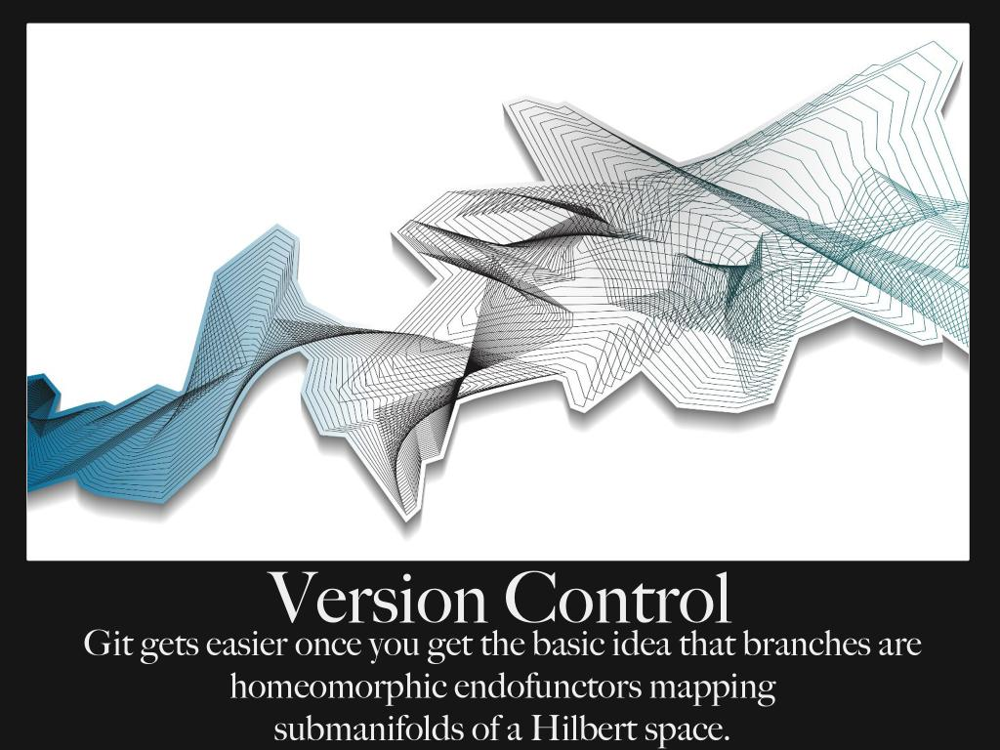
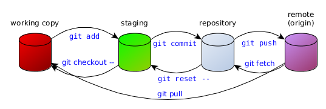

Git & Github Survival Guide
Linux
HOGENT toegepaste informatica
Thomas Parmentier, Andy Van Maele, Bert Van Vreckem
2022-2023
Git
Versiebeheer
- = Registreren van veranderingen in code over tijd
- ook: documentatie, configuratie, …
- geschikt voor tekstformaat
- Revisie = toestand v/d code op bepaald moment
- timestamp
- auteur
- commit hash
- diff t.o.v. vorige revisie
Git
- Linus Torvalds (2005), Junio Hamano
- Versiebeheersystemen op dat moment ontoerijkend voor Linux
- Linux kernel development (bv. v5.19)
- 2.000+ developers
- netto +804.000 extra lijnen code
- 16.399 “commits”
- 12.325 commits staan klaar voor volgende versie

CLI vs GUI
Gebruik Git vanop de command line
(Tenminste, totdat je begrijpt wat je doet…)
GUI
- Verbergt complexiteit
- Verbergt details
- Beperkt mogelijkheden
- Bemoeilijkt troubleshooting
- Je begrijpt niet wat je aan het doen bent
CLI
- Leercurve, juiste commando’s leren gaat niet vanzelf
- Geen beperkingen op mogelijkheden
- Instructies zijn éénduidig en compact
- Makkelijker reproduceerbaar

Opstart, configuratie
Git client
- Installeer Git op fysiek OS en VM!
- Optioneel: Git UI, bv. Gitkraken
Basisconfiguratie
Herhaal dit op elk systeem waar je Git gebruikt!
$ git config --global user.name "VOORNAAM NAAM"
$ git config --global user.email "VOORNAAM.NAAM@EXAMPLE.COM"
$ git config --global push.default simple
$ git config --global pull.rebase true
$ git config --global core.autocrlf inputof
$ git config --global --editVoorbeeld: https://github.com/bertvv/dotfiles/blob/main/.gitconfig
Github
Herhaal dit op elk systeem waar je Git gebruikt!
- Genereer SSH sleutelpaar:
ssh-keygen - Kopieer inhoud van
~/.ssh/id_rsa.pub- publieke sleutel
- =tekstbestand! Geen MS Publisher
- Registreer op Github
- Avatar rechtsboven > Settings > SSH and GPG keys
- “New SSH key”
Eenvoudige workflow
Opstart
Maak repo aan op Github (Classroom)
Lokale kopie maken met
git clone git@github.com:USER/REPO.git- Groene knop “<> Code”
- Local, SSH, kopieer URL
Lokale kopie = directory met subdir
.git- Verplaatsen, naam wijzigen mag!
Lokale wijzigingen
Open terminal in directory met lokale kopie
[Bestanden bewerken]
$ git add .
$ git commit -m "Beschrijving aanpassingen"- Dit werkt ook:
git add BESTAND1 BESTAND2 ... .= huidige directory (recursief)
Gebruik git status!
Na elke stap, bij twijfel
- gewijzigde/toegevoegde bestanden: rood
- bestanden in “staging”: groen
- commando voor de volgende stap
- commando om stap ongedaan te maken
Lokale wijzigingen naar Github
- Eerst eventuele wijzigingen op Github binnenhalen
git pullofgit pull --rebase
- Dan lokale wijzigingen naar Github sturen
git push

Conflicten oplossen
Wat te doen bij conflicten?
$ git push
To github.com:bertvv/git-demo.git
! [rejected] main -> main (fetch first)
error: failed to push some refs to 'git@github.com:bertvv/git-demo.git'
hint: Updates were rejected because the remote contains work that you do
hint: not have locally. This is usually caused by another repository pushing
hint: to the same ref. You may want to first integrate the remote changes
hint: (e.g., 'git pull ...') before pushing again.
hint: See the 'Note about fast-forwards' in 'git push --help' for details.Stap 1. Rebase
$ git pull --rebaseStap 2. Status!
$ git status
rebase in progress; onto e5bd2df
You are currently rebasing branch 'main' on 'e5bd2df'.
(fix conflicts and then run "git rebase --continue")
(use "git rebase --skip" to skip this patch)
(use "git rebase --abort" to check out the original branch)
Unmerged paths:
(use "git reset HEAD <file>..." to unstage)
(use "git add <file>..." to mark resolution)
both modified: README.md
no changes added to commit (use "git add" and/or "git commit -a")Stap 3. Bewerk bestand(en)
- Zoek naar markeringen
- Sommige editors ondersteunen dit!
If you have questions, please
<<<<<< HEAD
open an issue
======
ask your question in IRC.
>>>>>> branch-aStap 4. Mark resolution
$ git add .
$ git status
rebase in progress; onto e5bd2df
You are currently rebasing branch 'main' on 'e5bd2df'.
(all conflicts fixed: run "git rebase --continue")
Changes to be committed:
(use "git reset HEAD <file>..." to unstage)
modified: README.md
$ git rebase --continueStap 5. Push!
$ git status
$ git push
$ git statusTips & tricks
Aanbevelingen
- Vaak committen/pushen
- Beschrijvende commit-boodschappen!
- Atomaire commits
git status!.gitignore- bepaalde bestanden nooit in versiebeheer opnemen
Aliases
Voeg toe aan ~/.bashrc
alias gp='git pull --rebase'
alias pr='git pull --rebase'
alias pt='git push -u origin --tags'
# Git author stats
alias gs='git ls-tree -r -z --name-only HEAD | xargs -0 -n1 git blame --line-porcelain | grep "^author "|sort|uniq -c|sort -nr'Zie: https://github.com/bertvv/dotfiles/blob/main/.bash.d/aliases.sh
Meer info over Git
- Visual Git cheat sheet: http://ndpsoftware.com/git-cheatsheet.html#loc=stash;
- Visualizing Git Concepts with D3: https://onlywei.github.io/explain-git-with-d3/
- Let op: verouderde commando’s
- Typische fouten rechtzetten: https://ohshitgit.com/
- Oefenen: https://gitexercises.fracz.com
Markdown
Documentatie, nota’s bijhouden
- Git(hub) = tekstgebaseerd => niet geschikt voor Word, enz
- Alternatief = Markdown
Markdown
- Makkelijk te leren
- Op Github automatisch als HTML getoond
- “Fenced code blocks”
- code met syntaxkleuren
- copy/paste naar terminal!
- Converteren naar andere formaten
Markdown in VS Code
- Plugins:
- Markdown All in One (Yu Zhang)
- Markdown PDF (yzane)
- markdownlint (David Anson)
- Features
- Ctrl+I, Ctrl+B = Italic, bold
- Ctrl+Shift+V = HTML preview
- Alt+Shift+F = Format table
- …
Mogelijkheden van Markdown
- HTML (cfr. Github)
- PDF (Pandoc, editor plugin)
- Presentatie (Pandoc, reveal.js)
- Website (Hugo, Jekyll, Mkdocs)
- …